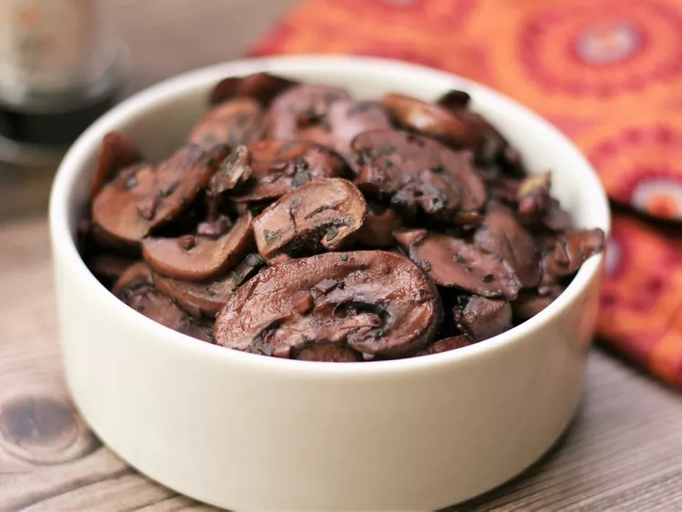

Garlic Mushrooms

Description
These garlic mushrooms are easy to make by sautéing sliced mushrooms in butter with red wine. Delicious with grilled steaks or on top of toasted bread for a tasty appetizer.
Ingredients
- 1 tablespoon butter
- 2 pounds sliced fresh mushrooms
- 4 cloves garlic, minced
- 1 teaspoon dried basil
- 1 cup red wine
Steps
- Heat butter in a skillet over medium heat. Add mushrooms and garlic; cook and stir until mushrooms are a light golden brown and liquid has evaporated, about 10 minutes. Stir in basil.
- Reduce heat to low, and pour wine into the skillet. Simmer until wine has mostly evaporated. Serve immediately.